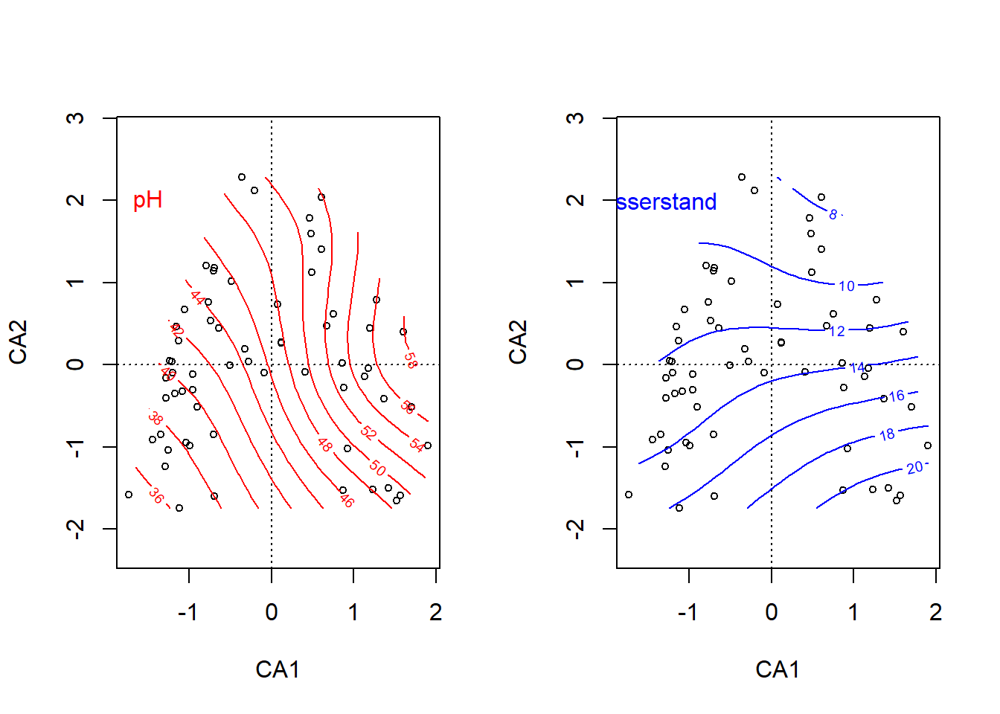
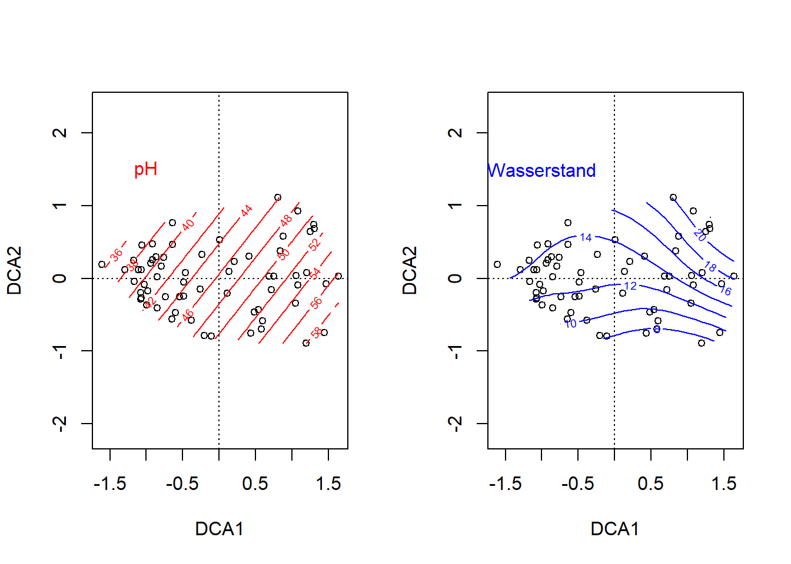
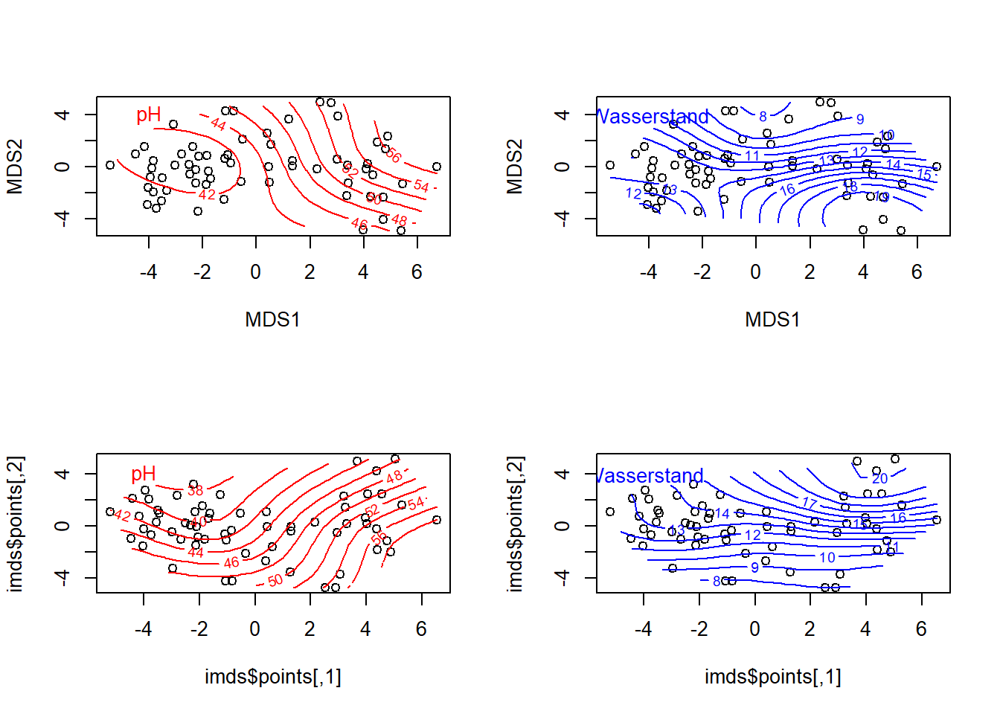

# Plot Arten
library("readr")
library("vegan")
sveg <- read_delim("datasets/stat5-8/dave_sveg.csv")
ssit <- read_delim("datasets/stat5-8/dave_ssit.csv")
# Daten anschauen
dim(sveg) # Vegetationsaufnahmen
## [1] 63 119
sveg[1:3, 1:3]
## # A tibble: 3 × 3
## Vaccinium.myrtillus Vaccinium.uliginosum Vaccinium.oxycoccos
## <dbl> <dbl> <dbl>
## 1 0 0 2
## 2 1 2 1
## 3 1 1 1
dim(ssit) # Umweltvariablen
## [1] 63 20
ssit[1:3, 1:3]
## # A tibble: 3 × 3
## pH.peat log.ash.perc Ca_peat
## <dbl> <dbl> <dbl>
## 1 39 162 72
## 2 36 13 88
## 3 44 177 141
# CA rechnen
ca <- cca(sveg^0.5)
## Plot mit ausgewählten Arten
sel.spec <- c(3, 11, 23, 31, 39, 46, 72, 77, 96)
snames <- names(sveg[, sel.spec])
snames
## [1] "Vaccinium.oxycoccos" "Carex.echinata" "Arnica.montana"
## [4] "Festuca.rubra" "Carex.pulicaris" "Sphagnum.recurvum"
## [7] "Viola.palustris" "Galium.uliginosum" "Stachys.officinalis"
scores <- scores(ca, display = "species", scaling = "sites")
sx <- scores[sel.spec, 1]
sy <- scores[sel.spec, 2]
plot(ca, display = "sites", type = "point")
points(sx, sy, pch = 16)
snames <- make.cepnames(snames)
text(sx, sy, snames, pos = c(1, 2, 1, 1, 3, 2, 4, 3, 1), cex = 0.8)
# Plot "response surfaces" in der CA
par(mfrow = c(1, 2))
plot(ca, display = "sites", type = "point")
ordisurf(ca, ssit$pH.peat, add = TRUE, col = "red")
##
## Family: gaussian
## Link function: identity
##
## Formula:
## y ~ s(x1, x2, k = 10, bs = "tp", fx = FALSE)
##
## Estimated degrees of freedom:
## 2.98 total = 3.98
##
## REML score: 264.6064
text(-1.5, 2, "pH", col = "red")
plot(ca, display = "sites", type = "points")
ordisurf(ca, ssit$Waterlev.av, add = TRUE, col = "blue")
##
## Family: gaussian
## Link function: identity
##
## Formula:
## y ~ s(x1, x2, k = 10, bs = "tp", fx = FALSE)
##
## Estimated degrees of freedom:
## 5.07 total = 6.07
##
## REML score: 161.492
text(-1.5, 2, "Wasserstand", col = "blue")
# Daselbe mit einer DCA
par(mfrow = c(1, 2))
dca <- decorana(sveg)
plot(dca, display = "sites", type = "points")
ordisurf(dca, ssit$pH.peat, add = TRUE)
##
## Family: gaussian
## Link function: identity
##
## Formula:
## y ~ s(x1, x2, k = 10, bs = "tp", fx = FALSE)
##
## Estimated degrees of freedom:
## 1.68 total = 2.68
##
## REML score: 264.2347
text(-1, 1.5, "pH", col = "red")
plot(dca, display = "sites", type = "points")
ordisurf(dca, ssit$Waterlev.av, add = TRUE, col = "blue")
##
## Family: gaussian
## Link function: identity
##
## Formula:
## y ~ s(x1, x2, k = 10, bs = "tp", fx = FALSE)
##
## Estimated degrees of freedom:
## 6.23 total = 7.23
##
## REML score: 161.1293
text(-1, 1.5, "Wasserstand", col = "blue")
## Dasselbe mit NMDS
mde <- vegdist(sveg, method = "euclidean")
mmds <- metaMDS(mde)
## Run 0 stress 0.1478603
## Run 1 stress 0.1471495
## ... New best solution
## ... Procrustes: rmse 0.01081071 max resid 0.06881268
## Run 2 stress 0.1792628
## Run 3 stress 0.1462959
## ... New best solution
## ... Procrustes: rmse 0.03087979 max resid 0.1476908
## Run 4 stress 0.1771671
## Run 5 stress 0.1758771
## Run 6 stress 0.1757064
## Run 7 stress 0.146296
## ... Procrustes: rmse 1.769562e-05 max resid 0.0001107662
## ... Similar to previous best
## Run 8 stress 0.146296
## ... Procrustes: rmse 2.2742e-05 max resid 0.0001287974
## ... Similar to previous best
## Run 9 stress 0.1890178
## Run 10 stress 0.1478603
## Run 11 stress 0.200195
## Run 12 stress 0.1477795
## Run 13 stress 0.1866176
## Run 14 stress 0.1788398
## Run 15 stress 0.1462959
## ... New best solution
## ... Procrustes: rmse 4.81931e-05 max resid 0.000302368
## ... Similar to previous best
## Run 16 stress 0.1664127
## Run 17 stress 0.148944
## Run 18 stress 0.1915273
## Run 19 stress 0.1854354
## Run 20 stress 0.171699
## *** Best solution repeated 1 times
library("MASS")
imds <- isoMDS(mde)
## initial value 21.981028
## iter 5 value 15.595142
## iter 10 value 15.269201
## final value 15.229997
## converged
par(mfrow = c(2, 2))
plot(mmds$points)
ordisurf(mmds, ssit$pH.peat, add = TRUE)
##
## Family: gaussian
## Link function: identity
##
## Formula:
## y ~ s(x1, x2, k = 10, bs = "tp", fx = FALSE)
##
## Estimated degrees of freedom:
## 3.04 total = 4.04
##
## REML score: 264.6698
text(-4, 4, "pH", col = "red")
plot(mmds$points)
ordisurf(mmds, ssit$Waterlev.av, add = TRUE, col = "blue")
##
## Family: gaussian
## Link function: identity
##
## Formula:
## y ~ s(x1, x2, k = 10, bs = "tp", fx = FALSE)
##
## Estimated degrees of freedom:
## 6.39 total = 7.39
##
## REML score: 168.0595
text(-4, 4, "Wasserstand", col = "blue")
plot(imds$points)
ordisurf(imds, ssit$pH.peat, add = TRUE)
##
## Family: gaussian
## Link function: identity
##
## Formula:
## y ~ s(x1, x2, k = 10, bs = "tp", fx = FALSE)
##
## Estimated degrees of freedom:
## 3.38 total = 4.38
##
## REML score: 264.0754
text(-4, 4, "pH", col = "red")
plot(imds$points)
ordisurf(imds, ssit$Waterlev.av, add = T, col = "blue")
##
## Family: gaussian
## Link function: identity
##
## Formula:
## y ~ s(x1, x2, k = 10, bs = "tp", fx = FALSE)
##
## Estimated degrees of freedom:
## 6.01 total = 7.01
##
## REML score: 167.6801
text(-4, 4, "Wasserstand", col = "blue")